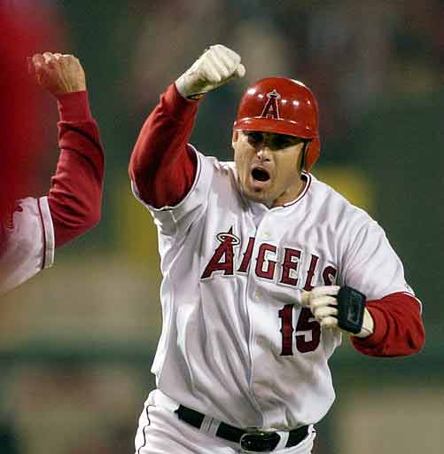
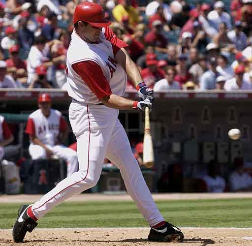
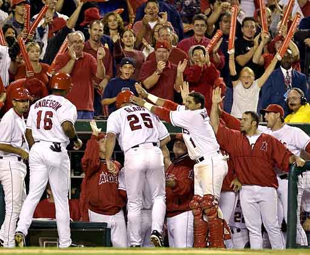
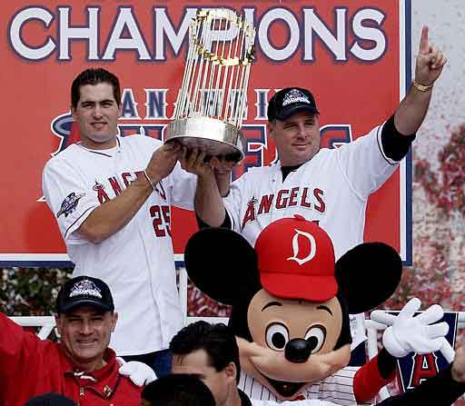
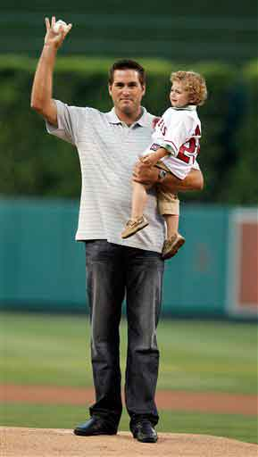

Troy Glaus
Troy Glaus Began his Career with the angels in 1998. He became the Angels starting third baseman in 1999. He had a break out season in 2000 where he became the all-time single season home run leader for angels third basemen with an impresive 47 home runs. He Followed his 2000 season with another 40 home run season in 2001 with 41 home runs. He also made the AL All Star team for the first time in 2001
In 2002 Glaus failed to reach the 40 home run mark but besides that his 30 homeruns that season helped perpell the angels to there first playoffs in 16 years. He became a key player in the Angels 2002 playoffs. Troy glause had a clutch 2 run double in game 6 of the world series which helped force a game seven which they ended up winning. Glause was named world series most valuable player.
 Glaus had anoter all star year in 2003 with the Angels. Though he set out most of his 2004 season with a shoulder injury. 2004 was also the last year of his contract with the Angels and they did not end up signing with the angels.
